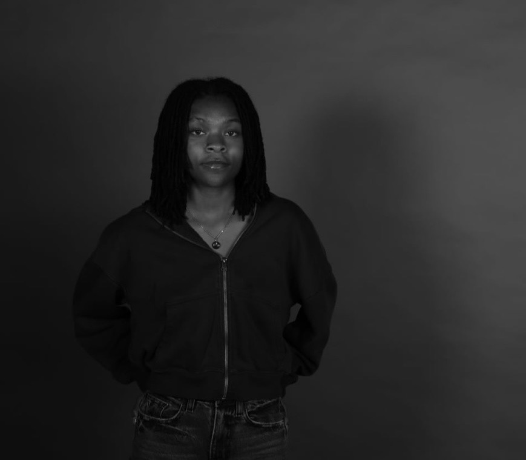

Note from the artist
Working in both analog and digital photography, my practice is often rooted in personal experience. I focus on representation and the relationship between my body and others within a space. My work engages vulnerability, presence, identity, and, at times, political tension. I invite viewers not only to look, but to feel the tension or stillness held within each photograph.
About the artist
Trinity is an emerging artist from eastern Michigan, currently based in Pittsburgh, Pennsylvania. In 2023 her work was on view at the Detroit Institute of The Arts after receiving a Gold Key in the Scholastic Art & Writing Awards, and The Anton Art Center (Mt Clemons, Mi). Most recently her work was included in the 2026 issue of The Fix Photographic magazine, titled Hallucinations (Pittsburgh, Pa).
